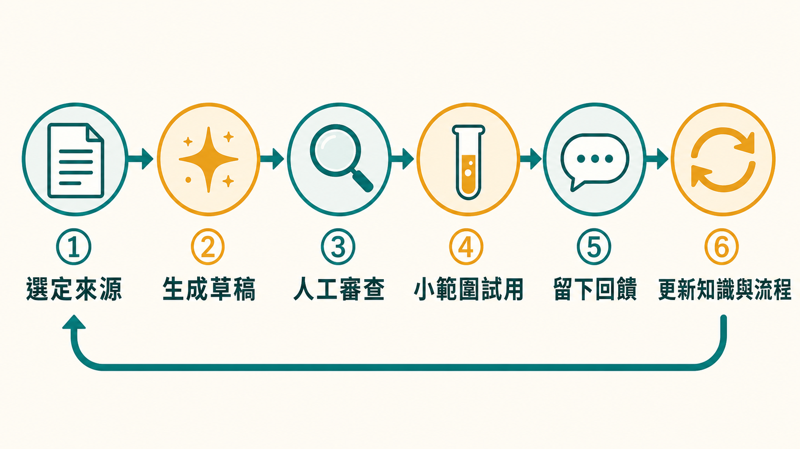

不用熱血抗資安：一人多工、AI 助理與企業韌性的治理實戰
課程定位：Day1 企業經驗分享，由陳建仲主講。聚焦中小企業 IT、資安與個資一人多工的現實，以及如何用 AI 協助治理溝通、檢核與演練。
中小企業的資安人員，往往沒有一個完整團隊。更常見的畫面是：同一個人要修電腦、開帳號、處理 Help Desk、審合約、兼顧個資，出了資安事件還要第一個被問「為什麼沒有擋住」。
AI 出現後，壓力不一定變小。主管可能反而認為「現在有 AI，一個人應該能做三個人的事」。這堂分享真正處理的問題，不是列出幾個神奇提示詞，而是面對一個組織現實：當人力永遠不夠，如何讓 AI 幫忙整理與溝通，同時保留人的判斷、權責與風險意識。
摘要
本篇整理一人多工的中小企業如何在 AI 協助下做資安治理。核心觀念是從「城牆防禦」走到「零信任」再走到「韌性」（IDPRR：識別、保護、偵測、應變、復原），承認預防有邊界。AI 可扮演四個角色：把技術風險翻成管理語言、把可信文件轉成檢核表、協助設計演練腳本、以及內部 Help Desk 助理，但每個角色都需要人工審查與「升級真人」的出口。文章也談 AI Agent 進入端點的風險、AI 迎合傾向如何加深錯誤決策、IT 與資安角色衝突的溝通方式，最後提供一個六步驟的可控 AI 工作流。
做過教育訓練，不等於可以閉著眼睛過馬路
講師用孩子過馬路的故事，解釋一種很常見的安全偏誤：法律規定車輛要禮讓行人，所以行人就可以不看車；公司做過教育訓練、裝了防火牆，所以員工就認為不會出事。
規則與控制降低風險，卻不會消滅意外。若企業因為多年沒有事故，便把「沒有被發現」誤認為「完全安全」，真正出事時反而更缺乏應變能力。
因此教育訓練後還要演練。前者告訴同仁應該做什麼，後者驗證大家在壓力、資訊不完整與時間有限時是否真的做得到。
從安全、零信任走到韌性
課程把企業資安觀念的演進分成三步。
第一階段是城牆式防禦：員工與系統大多在公司內，管好網路出口與防火牆，便能擋掉大量外部風險。第二階段是遠距與行動辦公：人、裝置與服務散布各地，企業開始用 MFA、持續驗證與零信任思維確認「你是誰、你能做什麼」。
第三階段則是韌性：即使身分驗證正確，人仍可能被騙、裝置仍可能失守、合法工具也可能被濫用。企業因此要回答下一題：「如果攻擊者已經進來，我們如何限制影響並恢復？」
韌性不是放棄預防，而是承認預防有邊界。它同時包含識別、保護、偵測、應變與復原，形成持續改進的循環。課堂使用「IDPRR」作為便於記憶的縮寫，核心概念就是不要只把預算放在保護，卻忽略事件發生後的偵測與復原。
圖：IDPRR 韌性循環——識別、保護、偵測、應變、復原後回到識別，持續改進。
搜尋結果、安裝指令與 AI 工具都可能成為入口
講師以近期案例說明，使用者搜尋 AI Agent 或技術工具的安裝方式時，可能把搜尋結果中的惡意頁面誤認為官方說明，直接複製並執行攻擊者提供的指令。
這個案例的重點不在某一家服務，而是信任鏈已經改變：
- 搜尋排名高，不等於內容可信。
- 看起來像官方文件，不等於網域與作者正確。
- 指令能成功執行，不等於它只做畫面上宣稱的事情。
- AI 產生的安裝步驟，也可能引用錯誤或過期資訊。
企業若允許同仁自行安裝 AI 工具，至少要建立來源確認、授權範圍與測試環境。涉及核心設備時，不能把「複製貼上很方便」當成變更管理。
AI 最實用的三個角色，不是資安長替身
課程提出三種對一人多工特別實用的 AI 角色。
角色一：把技術風險翻成管理語言
資安人員常對主管說「需要買 EDR」「要切 VLAN」「這個 CVE 很嚴重」，主管卻更在意停機、收入、客戶、責任與預算。
AI 可以先協助把技術敘述改寫成決策語言，例如：
- 不處理會影響哪個業務流程？
- 風險發生時，可能停多久、涉及哪些客戶？
- 目前有哪些替代方案，各自成本與限制是什麼？
- 哪一項是立即控制，哪一項是長期改善？
AI 在這裡是草稿翻譯員。最終風險評估仍要由了解企業的人確認，不能讓模型自行替主管決定。
角色二：把可信文件轉成可執行檢核表
資安署、資安院、CISA、NIST 或 CIS 等來源提供大量指引，但中小企業通常沒有時間逐條轉成內部作業。AI 可以根據經過挑選的文件，先產出符合公司角色的檢核表、稽核底稿或訪談問題。
這個做法的品質，取決於輸入文件。如果知識來源混雜、過期或未經確認，模型只會更快產生一份看起來專業的錯誤清單。
比較安全的流程是：
- 明確列出核准的知識來源與版本。
- 要求 AI 在每個建議旁標示依據。
- 由 IT、資安或流程負責人刪除不適用項目。
- 用小範圍試跑，記錄哪些問題無法回答。
- 定期更新知識庫，而不是建好後永久不管。
角色三：協助設計事件演練腳本
企業每年演練最常卡在「今年要演什麼」。AI 可根據產業、資產、既有控制與過去事件，協助產生合理情境：財務部門出現陌生裝置、供應商帳號在異常時間登入、員工執行了可疑安裝指令，或雲端分享連結造成資料暴露。
好的演練腳本不只是故事，還要包含注入資訊、決策點、預期證據與觀察項目。例如在第十分鐘通知備份失敗，觀察團隊是否知道替代方案；在第二十分鐘出現客戶詢問，確認公關與法務何時加入。
AI 可以加速產生變化，但演練負責人必須確保情境符合實際架構，且不會意外影響正式環境。
第四個角色：內部資安與 Help Desk 助理
當企業累積政策、常見問題、合約要求與處理紀錄後，可建立內部問答入口，讓同仁在找 IT 前先完成基本排查。這能降低重複問題，也能讓回答更一致。
但這不等於把所有內部資料丟進外部聊天機器人。至少要處理：
- 哪些資料允許送到外部模型？
- 對話是否會被服務商保留或用於訓練？
- 不同部門可查到哪些文件？
- 模型答錯時，如何轉交真人？
- 是否保留提問與回答紀錄供改善？
真正可用的 Help Desk 助理必須設計「升級真人」的出口。當問題涉及權限、個資、法律、付款、重大異常或模型信心不足，就不能讓使用者只依 AI 答案處理。
AI Agent 進入端點後，便利與攻擊面一起增加
課程提到把 AI Agent 部署到員工電腦，讓它協助排除問題。這類設計確實能節省 Help Desk 時間，卻也意味著代理程式可能讀取裝置資訊、呼叫中央服務、透過 API 傳送資料，甚至執行操作。
從風險角度看，Agent 是一個新的高價值介面：如果權限過高、憑證管理不當或更新來源遭污染，攻擊者可能利用同一條自動化路徑擴大影響。
導入前應先回答：
| 問題 | 最低要求 |
|---|---|
| Agent 能讀什麼？ | 依部門與資料分級限制範圍 |
| Agent 能做什麼？ | 預設唯讀，高風險動作需人工核准 |
| 資料送去哪裡？ | 明確記錄模型、API、區域與保存條件 |
| 如何知道它做過什麼？ | 保留可稽核日誌與關聯身分 |
| 被濫用時如何停用？ | 有集中撤銷、隔離與版本回退能力 |
財務、人資、研發與核心業務部門通常需要更嚴格的限制。地端模型不是自動安全，外部服務也不是一律不能使用；真正的判準是資料敏感度、控制能力、維運成本與殘餘風險。
AI 最大的治理風險之一，是它太會說你想聽的話
講師以「只說好聽話」形容生成式 AI 的迎合傾向。使用者本來就可能偏好支持自己立場的答案，如果模型再順著問題假設往下回答，錯誤決策會顯得更合理。
在資安情境中，可以用以下方法降低偏誤：
- 要求模型列出反對意見與失敗條件。
- 明確區分已知事實、假設、推論與待查證項目。
- 要求提供來源章節，而不只給結論。
- 用第二個角色或真人做交叉審查。
- 對高風險決策保留簽核，不讓 AI 自動執行。
例如主管想開放公共 Wi-Fi 或私人裝置，模型不應只回答「可以」或「不可以」，而要列出使用情境、資料敏感度、隔離方式、替代方案與接受風險的人。
IT 想讓大家工作，資安必須提醒哪些便利有代價
課程花了不少篇幅談 IT 與資安的角色衝突。IT 常被期待成為所有人的好朋友：電腦壞了、軟體不會用、門禁或延長線有問題，全部找 IT。資安工作則必須評估風險，有時要限制工具、免費 Wi-Fi、私人裝置或便利的操作方式。
如果同一人兼任兩種角色，直接說「不行」很容易讓同仁感到權利被剝奪。講師建議把語言改成「我需要評估這個做法的風險」，再提出能工作的替代方案。
這不是話術包裝，而是治理的本質：資安不是為了阻止工作，而是讓風險由有權責的人知情決定。若業務一定要使用某工具，就應釐清資料範圍、隔離方式、監控與期限，而不是讓需求轉入地下。
高層治理比單一工具更早，也更難被取代
課程整理出三個企業趨勢：
- 防禦重心從單一城牆，走向身分驗證、零信任與事件韌性。
- 中小企業導入資安時，高層治理與基本控制優先於追逐高階工具。
- 客戶與供應鏈要求正從「你有沒有合規文件」，逐漸延伸到「事件發生時誰承擔損失」，包括保險與契約責任。
工具能偵測或阻擋部分風險，卻不能替企業決定停機、通報、賠償與資料使用邊界。這些仍是管理責任。
五項基本功，要配合企業節奏
分享最後回到幾項基本控制：風險盤點、MFA、員工教育、系統更新與應變演練。它們都不是一次性工作。
製造業或不能任意停機的環境，更新尤其要兼顧可用性。課堂提到有企業會等版本穩定後配合歲修更新，這呈現真實營運取捨；但等待不能變成無限延期。若弱點正在被利用，企業仍需要臨時隔離、關閉功能或加強監控，並由管理層接受殘餘風險。
一人多工的 AI 資安工作流
中小企業可以用一個可控的小循環開始：
- 選定來源：只使用經核准的政策、指引與內部紀錄。
- 生成草稿：請 AI 產生管理摘要、檢核表或演練初稿。
- 人工審查：確認事實、適用範圍、法律與技術限制。
- 小範圍試用：先在單一部門或非核心情境驗證。
- 留下回饋：記錄模型答錯、缺資料與被使用者誤解之處。
- 更新知識與流程：把新案例轉成下一輪規則與演練。

結論
AI 真正帶來的價值，不是讓一個人假裝有十個分身，而是減少重複整理，把有限的人力留給判斷、協調與承擔責任。當這個界線清楚，AI 才是資安治理的槓桿，而不是新的單點風險。
從城牆到零信任再到韌性，從一人多工到 AI 協作，貫穿全篇的是同一個原則：便利與效率可以交給工具，但風險判斷、權責歸屬與最終決策，必須留給知道後果的人。
來源與閱讀說明
- 課程影片：115年中小企業基礎資安培訓課程｜第二期 Day1
- 完整逐字稿：HackMD 課程逐字稿
本文依企業分享逐字稿重組。課堂提及的新聞、產品價格與市場案例未逐一外部查核，應視為講者用來說明治理觀念的素材，而非採購或事實認定依據。